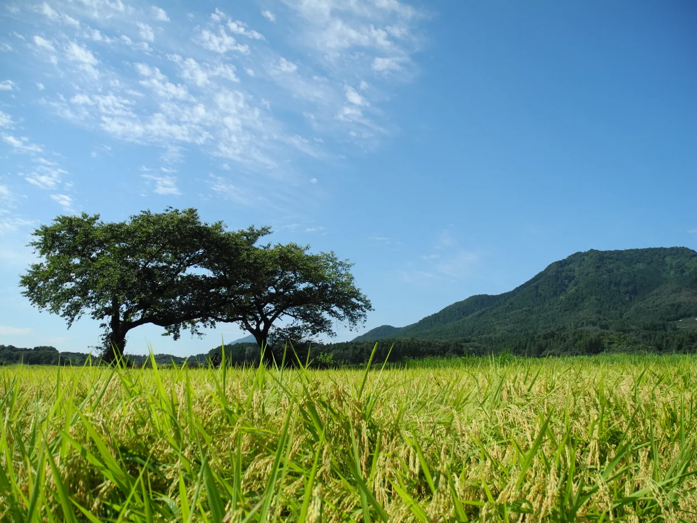
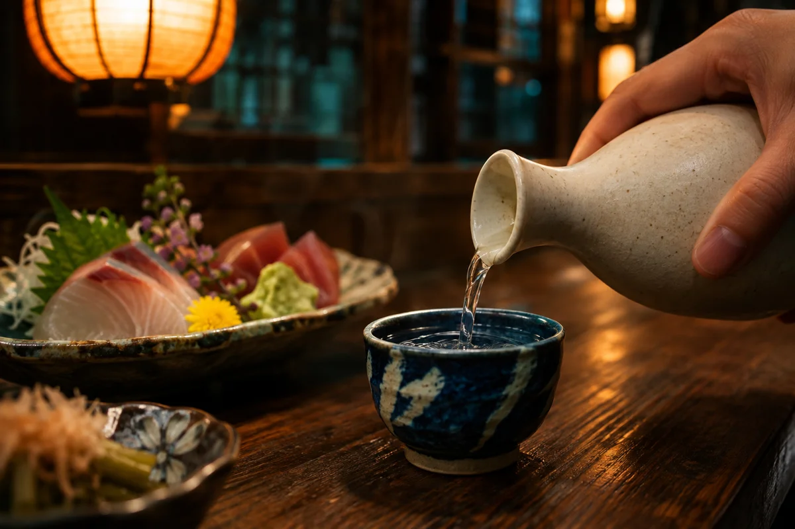

焼きたての鮭をたれに漬ける、新潟の郷土の味。粗くほぐした身をご飯と一緒に。
1,600 円
鮭の焼き漬け、県産コシヒカリ、新発田牛。ひと折に詰まった越後を旅のお供に。
焼きたての鮭をたれに漬ける、新潟の郷土の味。粗くほぐした身をご飯と一緒に。
鮭の焼漬け、南蛮海老の唐揚げ、車麩。新潟のおかずをひと口ずつ、白いご飯のお供に。
卵焼きの下には、新発田牛のしぐれ煮。肉と酢飯を一緒に味わう寿司仕立てです。
料理の画像は生成イメージです。盛り付け・容器は実物と異なります。
米どころの風景から、港町に残る路地と酒場へ。

越後平野に広がる田んぼ。白いごはんを主役にするなら、昼は新潟の米を握ったおにぎりを。

来庁日の昼休み、夕食前のひと歩き。行きたい場所を選んで、旅のしおりに。
市役所での用事の前後に。
出発地点から選ぶ、小さな散策プラン。